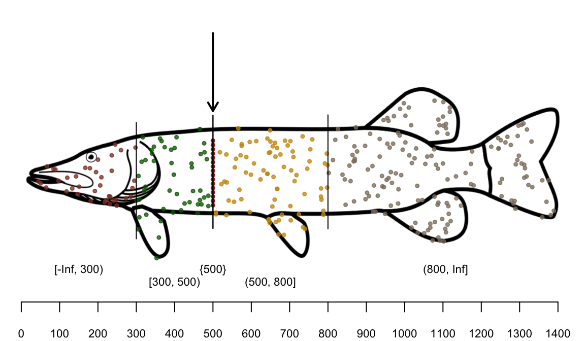
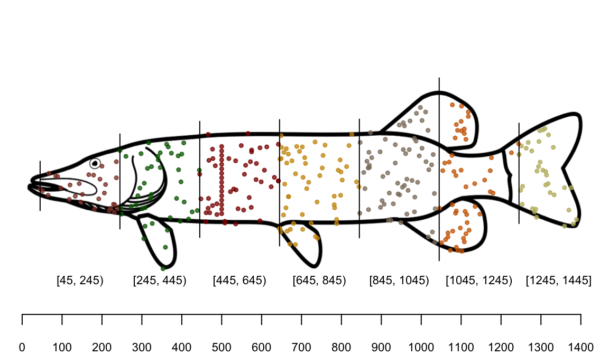
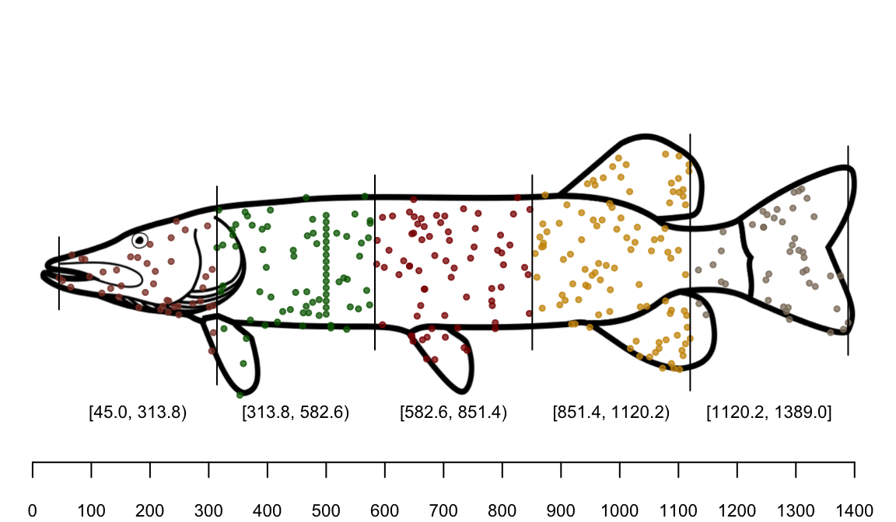
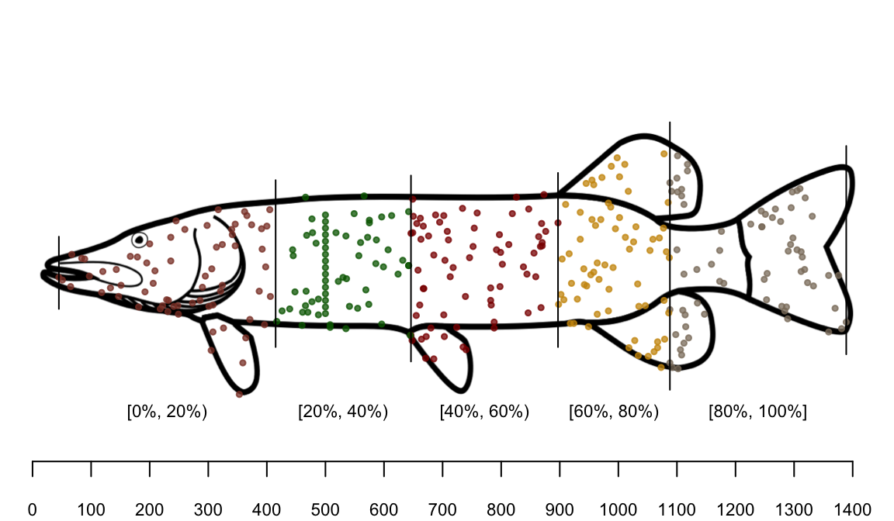
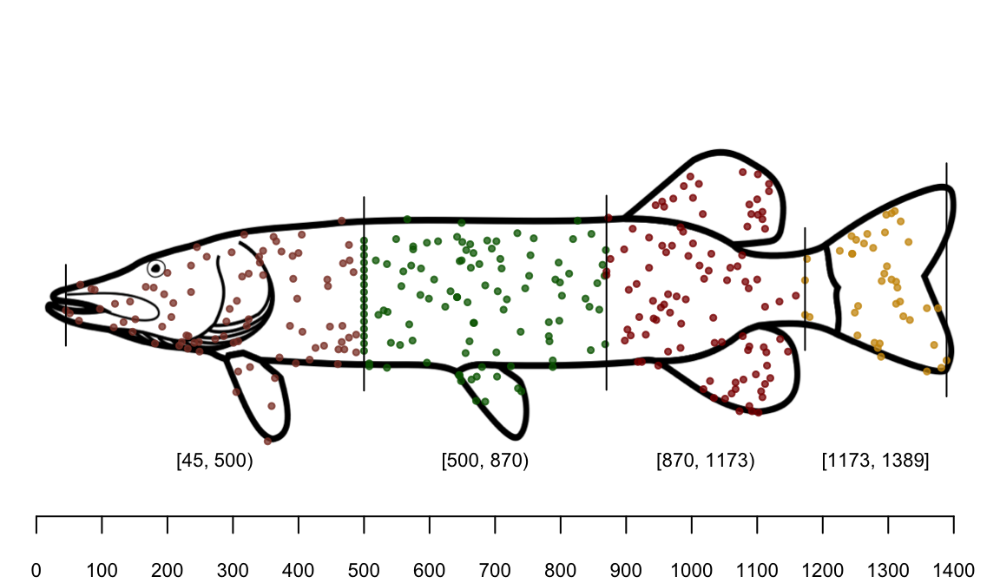
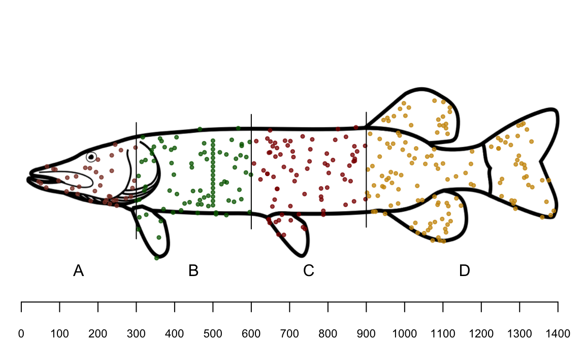
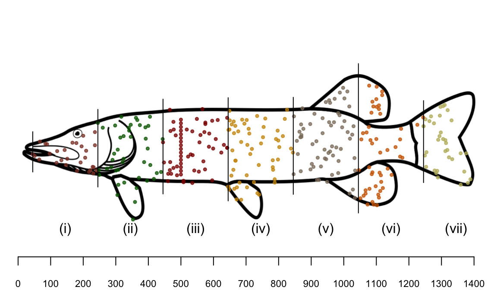
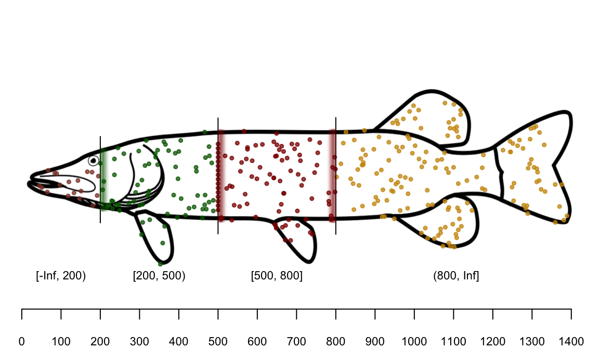
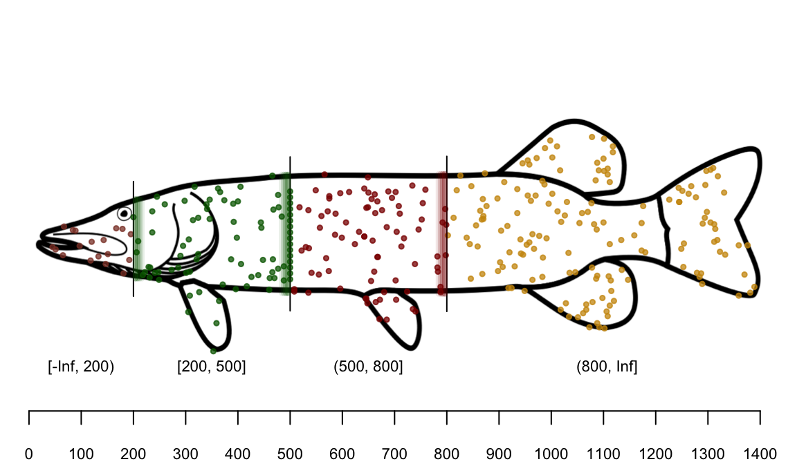

Santoku
A Japanese kitchen knife.
{santoku}
An R package for cutting data.
Some data
## x y
## 1 813 305
## 2 133 239
## 3 364 163
## 4 942 244
## 5 685 131
## 6 232 220
Chopping by a single value

Chops fixed-width intervals

Chops groups equal-width intervals

Chops intervals with an equal number of elements

Chops intervals with a fixed number of elements

Quick tables
## x
## [-Inf, 300) [300, 600) [600, 900] (900, Inf]
## 38 89 78 135
## x
## [-3 sd, -2 sd) [-2 sd, -1 sd) [-1 sd, 0 sd) [0 sd, 1 sd) [1 sd, 2 sd)
## 2 64 107 103 64
Changing labels
You need one more labels than breaks:

Changing labels
Not sure how many intervals you will have?
Use a lbl_* function.
Changing labels
Not sure how many intervals you will have?
Use a lbl_* function.

Left-closed and right-closed
Breaks are closed on the left by default.

Left-closed and right-closed
For right-closed breaks use brk_right():
